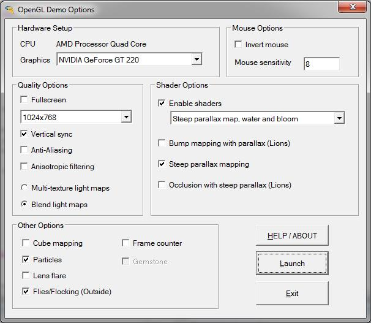
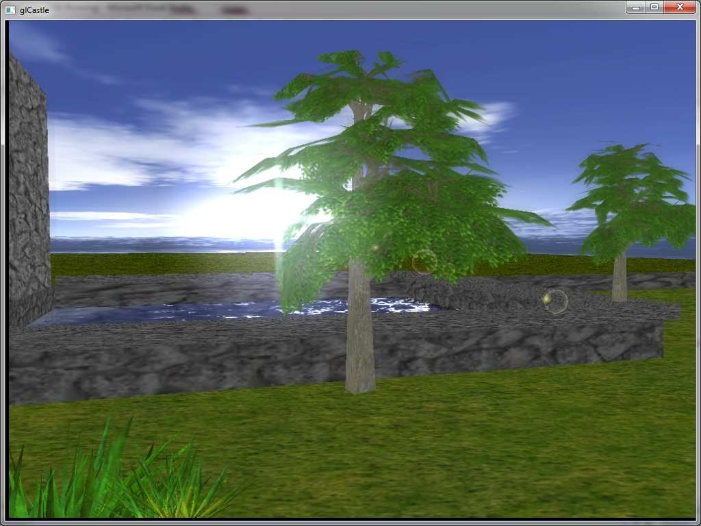
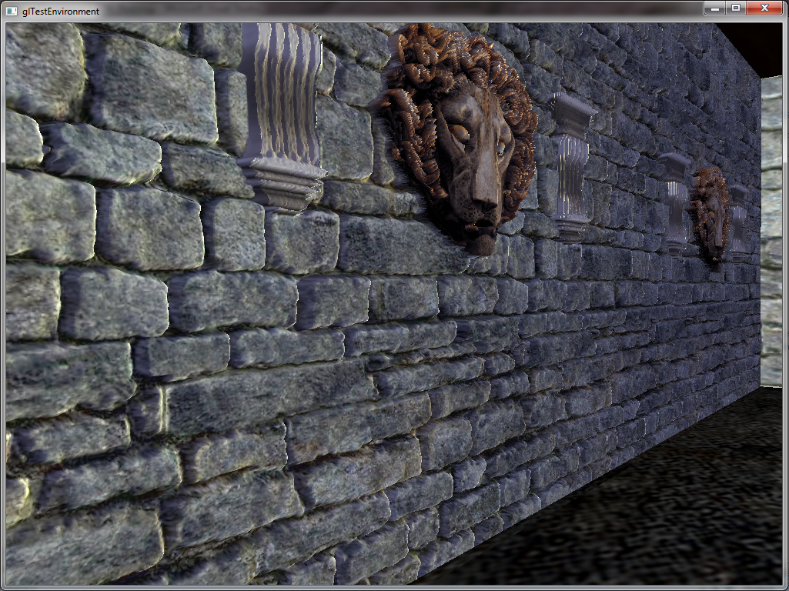
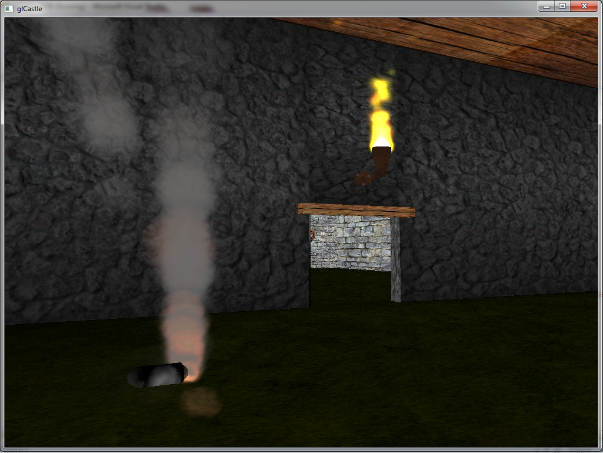

<< Back
<< Back
3D Castle Scene

Graphics options launch dialogue

HDR effects using frame buffer and shaders

Parallax occlusion mapping

Particle effects
On launch the demo provides options to allow customising of effects. Features may be disabled if they are not supported on the PC the demo is running on. The demo has been developed in order to run on a wide range of PC setups at decent framerates. In order to acheive this I have kept the number of textures used to a minimum by packing them together with a seperate tool. The shader effects are far from optimal.
The code was developed from scratch without a 3D engine, with the following exceptions:
- Flocking - This was based on code from Game Programming Gems 1 (Steven Woodcock's Article)
- Font Code - This was based on code in a NeHe OpenGL tutorial
- Textures - Many of these were not made by myself (e.g parallax textures are from McGuire's page on parallax mapping)
Included in the demo is an implementation of some of the work I completed as part of a shader course (parallax mapping), in a more realistic game environment. The mapping uses a simple ray tracer to improve offset by tracing the ray back toward the viewer. Other effects include a water shader which requires real time rendering to texture and HDR (High dynamic range) effects on the sky box and sun. In the first room a torch and smoke canister are simulated using a simple particle system and shaders, multi-texturing is used for lighting and cube mapping is used to render a hovering cube.
The water simulation is implemented using shaders. In addition to a standard texture it uses a height map, DUDV map and a reflection texture. Highlights are also calculated based on where the sun is.
Bloom effects were created by rendering the scene with a shader which attempts to extract brighter areas and then convolves the image using a gaussian blur. This result is then rendered to a texture and rendered to screen using an additive operation after it has been tone mapped. The tone mapping is done in a seperate shader. I also experimented with bilinear filtering of the texture at different levels to create a blur, although this doesn't seem to improve the effect much.
Fauna is rendered using 3D models, although I originally experimented using billboard techniques (which is still used for particle rendering). 3D objects use a sorted container to render from front to back; this is a rather crude method of visibility rendering, a better solution would have been to use a BSP/quad tree which would theoretically improve the frame rate hits.
The demo was tested on a recent mid-range graphics card and some older ones (as of January 2013). The recent ATI card can run the demo at 60fps, this drops slightly in the outside environment. The older card (Geforce 6 series) has trouble rendering the full room parallax above 17fps. The outside scene renders at slightly better framerates. The performance issues outside have been found to be down to the rendering of grass and trees, probably due to a mixture of not using vertex buffer to render the models and some of them being made up from too many polygons (also may be the visibility rendering techniques used).
Currently I am experimenting with vortex particles along with some shader effects to improve the smoke effects.
Download source hereDownload demo here
<< Back